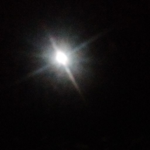

Size matters here, this is a small article, and needs to be bigger!
More information needs to be added about this subject, such as what the songs are like, and the reception they got at the time.
2019-03-05
More information needs to be added about this subject, such as what the songs are like, and the reception they got at the time.
Discjoppie (also called "DISCJOPPIE") is the name of two experimental sounds, produced, and published by Neocities user Joppiesaus in September of 2017.
Gesundheit is the top track on the web page, the song is a techno tune that uses 126 BPM. Joppiesaus comments on this song by writing;
My first production. I've learned many things while making this. I like the "break" with the chords.
The cover of this song is seen on the right.
This is the second song on the web page, although this is his third production. The song uses 128 BPM.
Joppiesaus comments on this song by writing;
My third production. Learned even more things. I don't know what genre this is!
This song was used in a video by OwlMan in 2017.
I. Discjoppie website https://joppiesaus.neocities.org/discjoppie/ [Internet Archive]
II. Discjoppie on Soundcloud https://soundcloud.com/discjoppie/
This page was last updated: 01/07/2018 @ 17:24
In total this page has had 0 updates since it was uploaded.